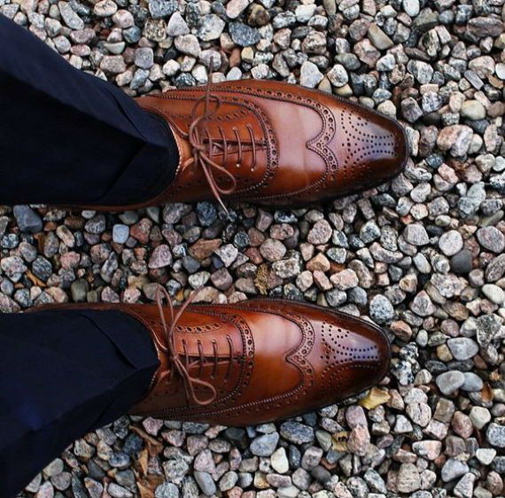

BROGUE
Surgiu na Idade Média, entre os séculos V e XV. O nome é derivado de bróg, que significa “sapato” em gaélico língua dos povos primitivos, da região da Escócia e da Irlanda. Feito para ser usado no campo por caçadores e trabalhadores, o brogue era um sapato rústico, pesado e funcional para proteger os pés. Os furinhos – broguing – tinham a função de drenar a água quando atravessavam brejos e lamaçais. As características do modelo são: o “medalhão” na ponteira, o desenho no formato da letra W (wingtip) e as asas que se estendem pela lateral do sapato. Não são, contudo, adereços obrigatórios, pois o mais importante é a presença dos broguing (furos). Os brogues não eram considerados sapatos formais, mas em 1930 caíram no gosto da nobreza inglesa e das estrelas de Hollywood. Hoje, suas versões híbridas são um item de moda no mundo.